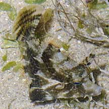
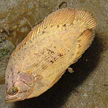
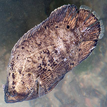

|
|
| fishes text index | photo index |
| fishes | Family Synanceiidae | Family Scorpaenidae | Family Batrachoididae | Family Serranidae |
| Leaf-like
fishes How to tell them apart? updated Sep 2020 Several different kinds of fishes are look and behave like leaves. They are flat, disk-shaped. Some have patterns that resemble dead leaves, others resemble seagrass leaves. Some may also drift with the currents with other dead leaves and other flotsam. Here's more on how to tell them apart. |
 |
 |
 |
Juvenile Batfish Family Ephippidae |
Juvenile Brown sweetlips Family Haemulidae |
Filefish Family Monacanthidae |
| Drifts with the currents, but can swim away rapidly. | Drifts with the currents, but can swim away rapidly. | 'Hangs' motionless among seaweed and seagrass, but can swim away rapidly. |
| Very elongated dorsal and anal fins. Usually with two dark bars, one through the eye, on an orange body. But patterns can vary. | Disk-shaped, uniformly brownish. Can immediately change to a lighter shade. Tail fin transparent, so at first glance, it appears to have no tail. | Disk-shaped, various colours and patterns, usually blending with its surroundings. |
| More comparisons |
 Tripletail drifts with its head down.. |
 Tripletail drifts with its head down.. |
 Juvenile Sicklefish. |
 Feathery filefish resembles leaves or seaweeds covered in growths. |
 A tiny filefish resembling a seagrass leaf. |
 Filefish resembling a seagrass leaf. |
| how to tell apart stick-like fishes. |